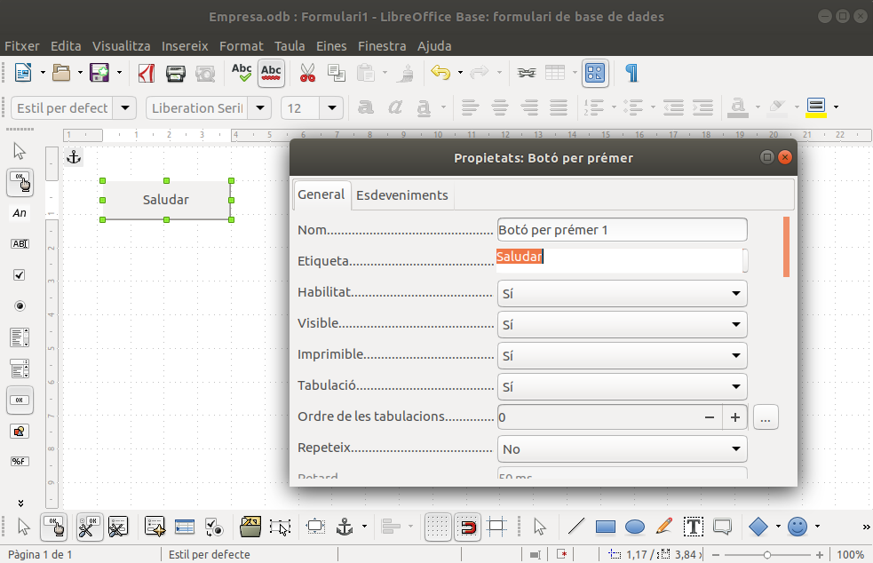
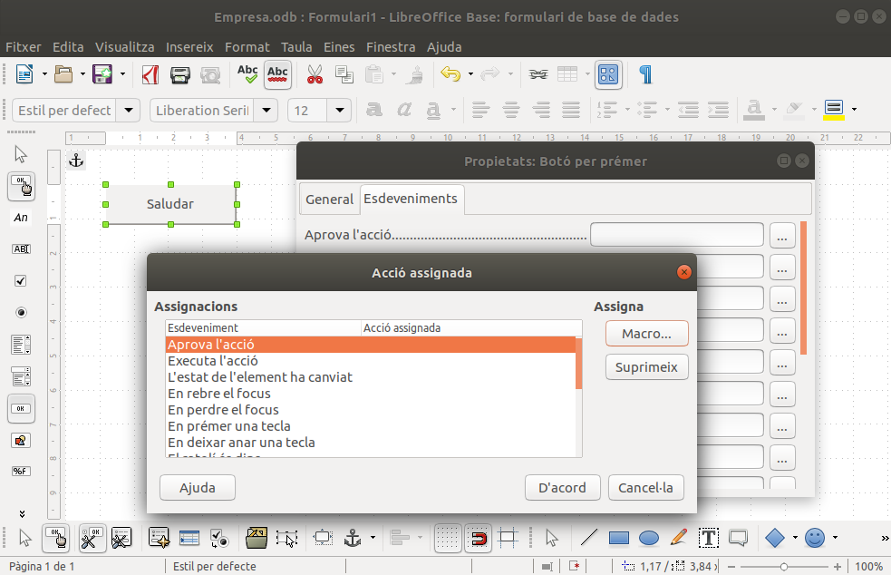
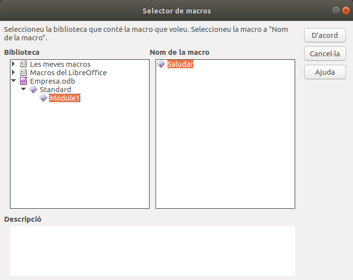
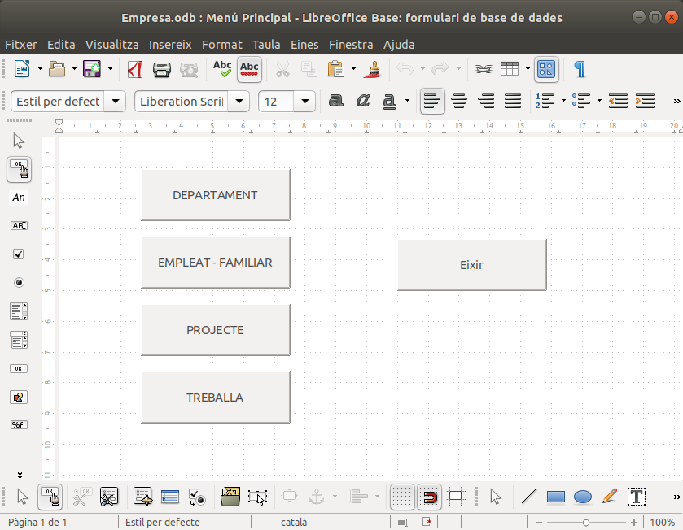
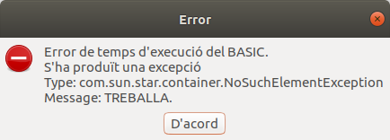

2.2 Quan executar una macro: esdeveniments
L'anterior manera d'executar les macros és la més senzilla, però no és l'habitual, no és gens pràctica.
El més habitual és executar la macro en produir-se un esdeveniment (evento , event): quan apretem un botó, en actualitzar-se algun camp d'un formulari, quan visualitzem un nou registre...
La llista d'esdeveniments és molt llarga, i en aquest annex que té una pretensió merament introductòria només veurem uns pocs esdeveniments.
Per a poder fer la primera prova, anem a crear un nou formulari que anomenarem Menú principal per motius que veurem després.
En aquest formulari posarem un botó (Botó per prémer) i fem doble-clic sobre ell per a anar a les propietats del botó. Posarem l'etiqueta Saludar, i en la pestanya Esdeveniments apretarem als 3 puntets que estan al costat de Aprova l'acció, per a triar l'única macro que tenim de moment: Saludar
|  |  |  |
Per a poder comprovar-ho hem d'anar al mode d'execució del formulari, abandonant el mode d'edició.
Per a fer més útil aquest formulari, intentarem posar un botó per a poder anar a cadascun dels formularis que hem creat per a les diferents taules També posarem un botó per a eixir de LibreOffice Base.
Prèviament haurem de crear les macros per a poder anar a cadascun dels formularis i per a eixir. L'acció serà open sobre el formulari, que primer hem de buscar. L'acció d'eixir serà Close(True) sobre el document que és aquesta Base de Dades.
Copieu-vos el següent codi dins del Module1 de Empresa.odb, on teniu ja la macro de saludar. Recordeu que per a anar al codi de VisualBasic heu de fer Eines -> Macros -> Organitza les macros -> Basic. Hem posat també la macro Saludar (només ha d'estar una vegada, clar)
Sub Saludar
print("Hola")
End Sub
Sub obrirDepartament
ThisDatabaseDocument.FormDocuments.getbyname("DEPARTAMENT").open
End Sub
Sub obrirEmpleatFamiliar
ThisDatabaseDocument.FormDocuments.getbyname("EMPLEAT-FAMILIAR").open
End Sub
Sub obrirProjecte
ThisDatabaseDocument.FormDocuments.getbyname("PROJECTE").open
End Sub
Sub obrirTreballa
ThisDatabaseDocument.FormDocuments.getbyname("Treballa").open
End Sub
Sub eixir
ThisDatabaseDocument.Close(True)
End SubA continuació, heu de modificar el botó que ja teniu per a posar-li l'etiqueta DEPARTAMENT i canviar la macro de quan s'apreta el botó (esdeveniment Aprova l'acció) per la macro obrirDepartament.
Després haureu de crear 3 botons més per a obrir els altres 3 formularis, i un altre botó per a eixir (macro eixir).
Aquest podria ser l'aspecte del formulari:

NOTA
Heu de cuidar que en el codi de les macros heu posat el formulari que voleu obrir EXACTAMENT IGUAL que el nom real que li heu donat al formulari. Per exemple, si el formulari es diu Treballa i en la macro hem posat
Sub obrirTreballa
ThisDatabaseDocument.FormDocuments.getbyname("TREBALLA").open
End Sub
És a dir, que el nom és només amb la primera majúscula, però en la macro ho hem posat tot amb majúscules.
Ens apareixerà el següent error:

Llicenciat sota la Llicència Creative Commons Reconeixement NoComercial SenseObraDerivada 2.5